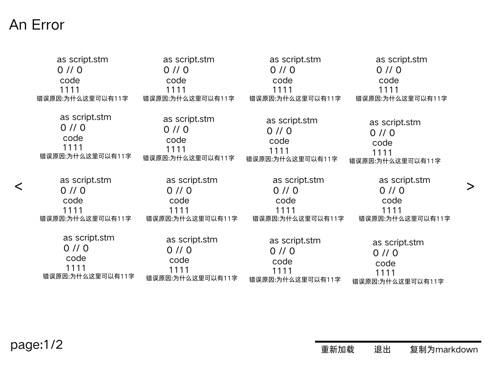

STMG（Super Text Markdown Galgame language），中文叫「超级文本 Markdown 语言」，简称 STM / STMG。它是一门专门用来写 Galgame 剧本的标记语言，设计思路非常直白：
- 像 HTML 一样，文档分成「头」和「身体」两块；
- 像 Markdown 一样，剧本本身保持接近纯文本的可读性，把 md 的特性直接搬进 Galgame 里。
下面就从头写到尾，把语法、目录组织、角色定义、扩展接口和错误提示机制完整过一遍。
一、整体结构：头 + 身体
和 HTML 一样，一份 STM 文档分成头和身体两部分。
头（head）
头负责描述游戏的元信息：
<
Large=800x600
title="title"
Ver="1.0.0"
Pack="com.example.example"
Lang="cn"
Font="SIMHEI"
>
| 字段 | 示例值 | 含义 |
|---|---|---|
Large |
800x600 |
游戏窗口分辨率 |
title |
title |
游戏标题 |
Ver |
1.0.0 |
版本号 |
Pack |
com.example.example |
包名 |
Lang |
cn |
语言 |
Font |
SIMHEI |
默认字体 |
身体（body）
身体就是剧本本身，用各种模块把剧情推下去：
<
Start:
"example"
"example"
<-- 我是注释 -->
Choose:
<-- 选择 -->
"选项1":"选项2"
If "选项1":
"example"
If "选项2":
"example"
"example"
Question:<-- 询问,input() -->
"example"
STM.Q = "text..."
<-- 这里是询问框中显示的文字 -->
"example"
"..."
"hello"
S.voice("music/1.aac/wav/mp3/...")
S.play("music/imamusicorbgm.MP3/wav")
S.sound("music/imabgs.mp3/wav")
"sth.."
S.cg("png/这里是背景/cg.png")
S.picture("png/在背景上层显示一张图片.png")
S.character("png/我是立绘.png")
>
从这段里能读出几个基本模块：
- 注释：
<-- 我是注释 --> - 选择：
Choose:后面接"选项1":"选项2"，再用If "选项1":/If "选项2":分别接住两条分支 - 询问：
Question:配合STM.Q拿到玩家的输入，其中STM.Q = "text..."是询问框里显示的文字 - 音频：
S.voice()语音、S.play()音乐 / BGM、S.sound()背景音效，括号里直接写资源路径，aac / wav / mp3都支持 - 画面：
S.cg()背景 CG、S.picture()在背景上层叠一张图、S.character()立绘 - 说话：直接用
"..."引起来就是一句台词
结尾（可选）
剧本末尾可以带一段可选的结尾：
<
"hi"
>
再往后还可以单独放一段收尾：
<
"感谢游玩"
>
二、Markdown 支持
STM 把 Markdown 的行内特性直接搬了进来，比如加粗：
"**hello**"加粗
这就是它最核心的主张——把 md 的特性加入到制作 Galgame 中。
三、完整示例：script.stm
把上面的东西拼起来，一份完整的 script.stm 长这样：
<
Large=800x600
title="title"
Ver="1.0.0"
Pack="com.example.example"
Lang="cn"
Font="SIMHEI"
>
<
Start:
"example"
"example"
<-- 我是注释 -->
Choose:
<-- 选择 -->
"选项1":"选项2"
If "选项1":
"example"
If"选项2":
"example"
"example"
Question:<-- 询问,input() -->
"example"
STM.Q = "text..."
<-- 这里是询问框中显示的文字 -->
"example"
"..."
"hello"
S.voice("music/1.aac/wav/mp3/...")
S.play("music/imamusicorbgm.MP3/wav")
S.sound("music/imabgs.mp3/wav")
"sth.."
S.cg("png/这里是背景/cg.png")
S.picture("png/在背景上层显示一张图片.png")
S.character("png/我是立绘.png")
>
<
"感谢游玩"
>
四、调用 API：R.api
要联网调接口，用 R.api()：
R.api(url="example.com" key="可选,sk-1234567890")
url 是接口地址，key 是可选参数，不填也行。
五、变量
变量用 SET 声明：
SET 名称 = 内容
它也能直接吃文件后缀：
SET dec = dec.all(".stmdec")
dec 的完整用法以后再讲。
六、设置界面：Options.stm
游戏的配置单独放在 Options.stm 里：
<
About = "这里是显示在about中的内容,你可以随便写,也可以在gui.py中隐藏about按钮,123456789"
Enc = "这里是密钥,解密时没有你的密钥解不开(除非那个解包的一直暴力破解)"
dec = "*.stm,*.png,*.txt"
<-- 如果你担心在script中写apikey有风险,可以在这里写
只需要你在R那里,把key写成"option"
R.api(url="example.com" key=option)
-->
Key = "132456789"
>
这里的思路是：把 apikey 藏进 Options.stm 的 Key，剧本里只写 key="option" 去引用它——这样明文密钥就不会出现在 script.stm 里了。
七、目录结构
开发时
开发目录放在用户指定的文件夹里，这里假设是 C:/111：
📂111
├── 📂你游戏的名称 (游戏数据目录)
├── 📄script.stm (主剧本文件)
├── 📄options.stm (游戏配置文件，如分辨率、音量等)
├── 📂music (音频素材)
│ └── 📄yourmusic.mp3
├── 📂gui (UI界面素材与逻辑)
│ ├── 📂textbox (文本框素材)
│ │ └── 📄box.png (文本框背景图)
│ ├── 📂button (按钮素材)
│ │ ├── 📄start.png (开始按钮)
│ │ ├── 📄setting.png (设置按钮)
│ │ ├── 📄about.png (关于按钮)
│ │ ├── 📄button.png (通用按钮背景)
│ │ └── 📄voice.png (语音/音量按钮)
│ └── 📂png (用户自定义图片)
│ └── 📄用户自定义的.png
├── 📄markdown.py (md渲染模块，负责解析剧本语法)
├── 📄gui.py (固定GUI大小、位置、坐标、可见性、按钮数量等)
└── 📄start.exe (开发调试启动器)
⚠️ 注意：每次修改剧本后打开它查看效果。完事后，不要直接发布这个！ 正确做法是：在引擎中选择「发布」选项，生成加密的发布版。
发布版
发布版同样放在用户指定的文件夹里，这里假设是 C:/1111，原本的 .stm 全部变成加密后的 .stmdec：
📂1111
|__📂你游戏的名称
|__📄script.stmdec
|__📄options.stmdec
|__📄music.stmdec
|__📄gui.stmdec
|__📄markdown.stmdec
|__📄guipy.stmdec
|__📄start.exe(这是主文件)
引擎自带的 STMENC
STMG 引擎底下还有一个 STMENC 文件夹：
📂STMENC
|__📄start.py
没了。
八、定义角色
在 Start: 里用 S.character() 注册角色，之后角色名直接接台词：
Start:
S.character("名称")
名称"说的话"
要一次定义多个角色，就多写几行：
Start:
S.character("名称2")
S.character("名称1")
名称2"say"
名称1"say"
九、后门：STM.python()
因为底层是 Python，STMG 留了个后门，让开发者可以装 Python 库、直接在剧本里调用：
STM.python("name")
name 就是你要用的模块名，比如：
STM.python("turtle")
Turtle.forward(10)
这会打开一个窗口，让乌龟前进 10。
不过，有些开发者可能会用这个能力窃取隐私，所以它会在右上角显示自己干了什么：
[turtle"forward"]
如果你是想做 DDLC 那种悄无声息获取用户名的效果，建议你不要用这个，会打破沉浸感。
十、Display：右上角提示框
STM.display() 会在右上角弹一个框，和 STM.python 那个类似：
STM.display("example")
框里会显示 [example]。比如资源加载成功的时候，可以提示一句：
STM.display("资源加载成功了喵")
十一、ERROR 屏幕
和 Ren'Py 一样，也和所有语言一样——出错总要给个提示。Error 只会在开发环境中显示，不会跑到玩家面前。
触发 error 的方式有很多：
未定义角色就直接让角色说话
开头结尾忘记"<>"
把gui写错了
错误的运算(÷0/tan(90)/....)
....
错误界面长这样，会把所有报错分页列出来：

每条错误会告诉你出错的文件（as script.stm）、位置（0 // 0）、代码（code）、行号（1111）和错误原因，底部带上「重新加载 / 退出 / 复制为 markdown」三个按钮，左下角有 page:1/2 翻页。
错误有 5 个等级
按报错数量，错误被分成了五档：
| 等级 | 触发条件 |
|---|---|
A error |
只有一个错误 |
An error |
1 个以上，40 以下 |
Many error |
40 以上，50 以下 |
Lot of error |
50 以上，100 以下 |
Bro.... |
100 以上 |
小结
STMG 想做的事情其实很简单：把 HTML 的分区思路和 Markdown 的写作手感，塞进 Galgame 的剧本里。头写元信息，身体写剧情，S.* 管音频和画面，STM.* 管扩展，配置和剧本分开存放，出错有分级提示——一套下来，写剧本这件事就回到了「写字」本身。
后续会继续补 dec.all() 的用法和发布加密那一块，到时候再写一篇。